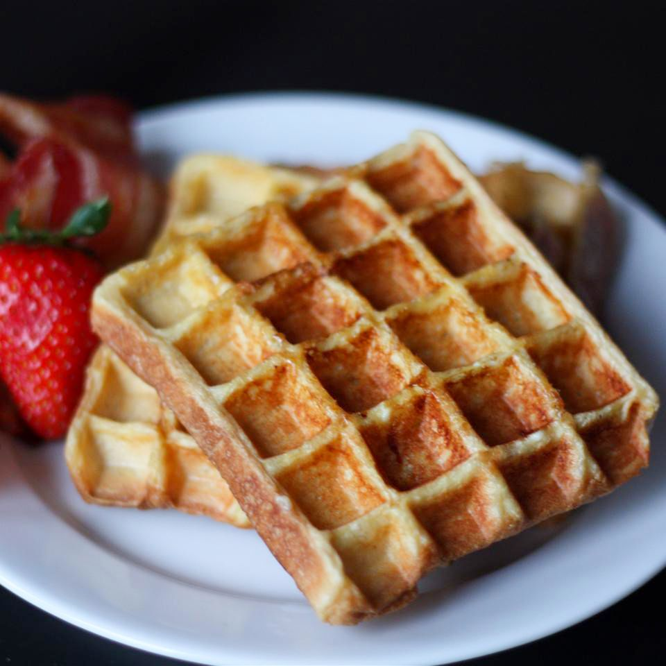

Waffle

Waffle with Strawberries
A waffle is a dish made from leavened batter or dough that is cooked
between two plates that are patterned to give a characteristic size,
shape, and surface impression.
There are many variations based on the typeof waffle iron and recipe used.
Waffles are eaten throughout the world,particularly in Belgium, which has over a dozen regional varieties.
Waffles may be made fresh or simply heated after having been commercially cooked and frozen.
Ingredients
- ½ cup whole milk
- 2 large eggs /li>
- 1 tablespoon maple syrup
- ½ teaspoon vanilla extract
- 1 pinch salt
- 4 1/2-inch thick pieces brioche
- cooking spray
Directions
- Preheat a waffle iron according to the manufacturer's instructions.
- Whisk milk, eggs, maple syrup, vanilla extract, and salt together in a wide bowl until thoroughly combined.
- Dip one slice brioche into the bowl and press gently until both sides are coated.
- Lift bread from the bowl with a slotted spatula, letting any egg mixture drip back into the bowl, and transfer to a rimmed baking sheet.
- Repeat with remaining bread. Let sit until egg mixture soaks in, about 2 minutes.
- Spray the preheated waffle iron with cooking spray.
- Place one slice brioche onto the waffle iron and gently close the lid without forcing it down.
- Cook until golden brown and the iron stops steaming, 3 to 5 minutes. Repeat to cook remaining waffles.
Credits